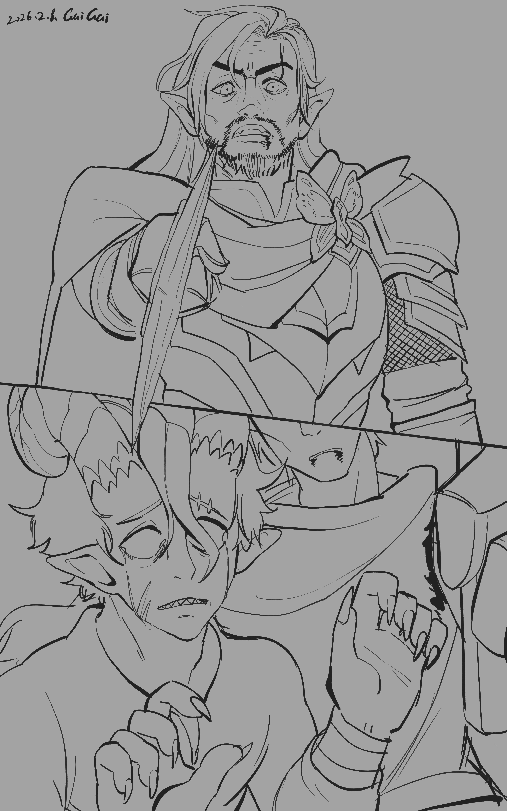

Chapter 2: The Truth Beneath the Mask
Py'Par's Vision


Py'Par's Vision
15051.10.19
天色逐漸明亮，村莊內的情緒也隨之和緩。「不要進到森林裡去！」的警告，也變成了「如果進去的話，要小心喔！」的提醒。烏波和巴斯踏入樹林不久，就回來了。他們決定先去拜訪昨晚羅特過夜的那戶人家。
男主人邀請兩位入內，並準備了熱茶。羅特在沙發上昏睡，他的夢中出現了賽柏的身影。直到烏波和巴斯繞在羅特頭邊注視著他，羅特才抱著宿醉的頭，緩緩甦醒，然後喝下大量的水。
羅特走出了房外，試著去找回自己送洗的衣物。村裡的太太和羅特道歉，說天才剛亮不久，他的皮甲還沒乾。巴斯則趁機幫烏波洗澡，並叫烏波變形成狗的模樣。
儘管村民們挽留他們，冒險者們決定還是得離開這裡。在賽柏獲就前，他們沒有可以逗留的餘裕。羅特拿回了還沒全乾的皮甲，並留下了幾枚銅幣，作為感謝太太給他現在身上穿的衣服。孩子們追到村口，和他們道別，有依依不捨、有大喊掰掰，也有躲在其他人身後不敢面對離別。
回到村莊外，烏波帶著大家回到前一天跟丟巨蛇痕跡的樹林內，但卻有點迷失了方向。幸運地，大家還是找到了一些痕跡，追了上去。不久後，烏波看見前方有個人影。他的腳踏遍之處，皆是花田。巴斯看見他是名妖精，便備好武器，羅特則潛行，並透過傳訊術嘗試和那人溝通。
妖精女子轉過頭來，和大家揮了揮手，表示自己叫派琶。眼見自己的潛行被識破，羅特現身，與其他夥伴們一起走到派琶身邊。派琶表示自己是涅西斯教派「常翠林」的一員，剛好外出任務。聽聞冒險者們詢問「巨蛇」，派琶表示他們幾天前剛遇到一頭巨蛇，把他趕走了，並解救了被巨蛇綑綁的一名男子。依照派琶的描述，這人就是賽柏。
聽到賽柏沒事，冒險者們都鬆了一口氣，但他在派琶離開教團躲藏的山洞前，似乎剛脫離昏迷，還不太能溝通，因此也無法和派琶問出什麼相關的資訊。派琶提議可以帶冒險者們回到他們的山洞，但他也不太確定到底直線距離要走多久可以到，他在這趟旅程途中到處繞著走。
途中，羅特從派琶的穿著，想起了過去一起冒險的拉黎爾。向派琶詢問，他表示似乎曾有這樣一個人，帶著他的異色瞳狼短暫在他們教團停留過幾天。派琶詢問羅特這位拉黎爾過得還好嗎？羅特強忍真相，點著頭說拉黎爾過的很好。巴斯也問起派琶這裡是否在洛森王國境內。派琶表示自己也不清楚，平常也沒什麼高官、貴族會來這裡，但附近也都是妖精在生活。而對於前一天冒險者們停留的村莊，他也只簡單提到那裡的人好像也不太離開村莊，除此之外他並不清楚。
烏波看見前方有一小撮人影。仔細一看，這些人穿著的還是芬尼爾的裝束。烏波準備和這些人行禮，其他夥伴們抓好武器，以防突發的戰鬥，羅特則躲到旁邊的樹林內潛匿。
這群芬尼爾的信徒馬上發起兇猛的攻勢，長矛、長刃、短劍與長弓擊發，還有一名站在最後方，手持手杖的人。他們全都戴著白色的面具。派琶發出法術，穩定冒險者的狀態。羅特從樹林中偷襲，每一發都朝向施法者的要害。芬尼爾信徒中，最強壯的那位與巴斯死命搏鬥，就算巴斯差點把他的頭砍下，他還是奇蹟似的重新站起，又撐了好一段時間。
最終，當他的頭應聲落地，施法者大喊「撤退！」要其他倖存的夥伴們先逃走，但他卻被羅特的法術控制住，以及被巴斯補上最後一擊。那人在昏厥前，輕喊了一聲「羅特」，讓羅特愣住了。羅特輕輕剝下那人的面具，準備審問他，但映入他眼簾的，是一張熟悉的身影。
羅特將昏迷的佛拉緊緊抱在胸口。他是當年母親大人事件後，除了芒果外，羅特僅存的夥伴了。羅特無法，也不打算止住他的淚水。
巴斯對此十分不爽。羅特擁抱著前一刻正準備把大家殺死的芬尼爾教徒，還用盡了自己的法術為他治療，這一點道理都沒有。他舉起武器釘在佛拉身上，大聲質問。羅特哭訴著真相。烏波也十分不爽，這群打著芬尼爾信徒之名的人，根本不配他的神。派琶則像局外人一樣，除了喊著大家不要吵架、有話好好說之外，只能向涅西斯禱告祈求幫助。
佛拉清醒後，爭吵並未止歇，但大家都認同應該先休息一下，整理好情緒再來談。派琶將帶在身上額外的糧食分給了大家，羅特則繼續用心照顧從死亡邊緣回歸的佛拉。
15051.10.19
The sky gradually became brighter, and the mood in the village also softened. The warning "Don't go into the forest!" has become a reminder "If you go in, be careful!" Ubbo and Buzz returned shortly after entering the woods. They decided to first visit the house where Lott spent the night last night.
The male host invited the two of them in and prepared hot tea. Lott fell asleep on the sofa, and Psyber appeared in his dream. It wasn't until Ubbo and Buzz circled Lott's head and stared at him that Lott hugged his hungover head, slowly woke up, and then drank a lot of water.
Lott walked out of the room and tried to find the clothes he had sent for washing. The lady in the village apologized to Lott, saying that the genius had just emerged and his leather armor had not yet dried. Buzz took the opportunity to help Ubbo take a bath and asked Ubbo to transform into a dog.
Despite the villagers' efforts to stay, the adventurers decided to leave. They have no room to stay until Psyber is obtained. Lott took back the leather armor that was not completely dry and left a few copper coins as a thank you to his wife for giving him the clothes he is wearing now. The children chased them to the entrance of the village and said goodbye to them. Some were reluctant to leave, some shouted goodbye, and some hid behind others and did not dare to face the separation.
Back outside the village, Ubbo took everyone back to the woods where they had lost track of the giant snake the day before, but they were a little lost. Fortunately, everyone still found some traces and chased them. Soon after, Ubbo saw a figure in front of him. Wherever his feet set foot, there are fields of flowers. Buzz saw that he was a goblin and prepared his weapons. Lott sneaked and tried to communicate with the man through communication technology.
The fairy woman turned her head and waved to everyone, indicating that her name was Py'Par. Seeing that his stealth was discovered, Lott appeared and walked to Py'Par with other friends. Py'Par said that he was a member of the Nesis sect "Chang Cuilin" and happened to be out on a mission. After hearing that the adventurers asked about the "giant snake", Py'Par said that they just encountered a giant snake a few days ago, drove him away, and rescued a man who was tied up by the giant snake. According to Py'Par's description, this person is Psyber.
The adventurers were relieved to hear that Psyber was okay, but he seemed to have just escaped from a coma before Py'Par left the cave where the order was hiding, and he was not yet able to communicate, so he was unable to ask Py'Par for any relevant information. Py'Par proposed to take the adventurers back to their cave, but he was not sure how long it would take to get there in a straight line, so he walked around in circles during the journey.
On the way, Lott thought of Lariel from the way Py'Par was wearing them. When asked about Py'Par, he said that there seemed to be such a person who briefly stayed in their sect for a few days with his heterochromatic eyed wolf. Py'Par asked Lott how is Lariel doing? Lott suppressed the truth, nodded and said that Lariel was doing well. Buzz also asked Py'Par whether this place is within the Kingdom of Lawson. Py'Par said that he didn't know. Normally, no high-ranking officials or nobles would come here, but there were also fairies living nearby. As for the village where the adventurers stayed the day before, he only briefly mentioned that the people there didn't seem to leave the village very much, but he didn't know anything else.
Ubbo saw a small group of figures ahead. If you look closely, you can see that these people are still wearing Phynoir's costumes. Ubbo prepared to salute these people. The other partners grabbed their weapons in case of a sudden battle. Lott hid in the nearby woods.
This group of Phynoir believers immediately launched a fierce offensive, firing spears, long blades, daggers and long bows, and there was also a man standing at the back holding a cane. They all wear white masks. Py'Par casts a spell to stabilize the adventurer's condition. Lott makes a sneak attack from the woods, and every shot is aimed at the caster's vitals. Among the Phynoir believers, the strongest one fought desperately with Buzz. Even though Buzz almost cut off his head, he miraculously stood up again and held on for a long time.
Finally, when his head fell to the ground, the caster shouted "Retreat!" to let the other surviving partners escape first, but he was controlled by Lott's spell, and Buzz delivered the final blow. Before fainting, the man shouted "Lott" softly, which made Lott stunned. Lott gently took off the man's mask and prepared to interrogate him, but what caught his eyes was a familiar figure.
Lott hugged the unconscious Phola tightly to his chest. He is Lott's only remaining partner after the The Mother incident that year, except for Mango. Lott could not, nor would he, stop his tears.
Buzz was very unhappy about this. Lott hugged the Phynoir cultist who was about to kill everyone a moment ago, and also used all his magic to heal him. This makes no sense at all. He raised his weapon and nailed it to Phola, asking loudly. Lott cries the truth. Ubbo is also very unhappy. These people in the name of Phynoir's followers are not worthy of his god at all. Py'Par, like an outsider, could only pray to Nesis for help besides calling everyone not to quarrel and to speak up.
Phola After waking up, the quarrel did not stop, but everyone agreed that they should take a rest first and collect their emotions before talking again. Py'Par distributed the extra food he brought with him to everyone, while Lott continued to take good care of Phola, who returned from the edge of death.